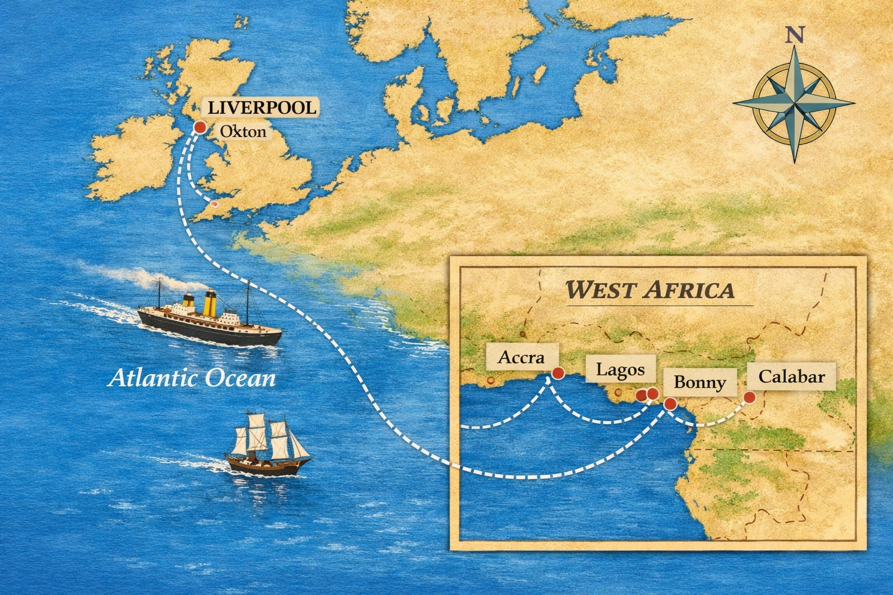

John Holt of Liverpool
John Holt was born into a large Lincolnshire farming family, the seventh of eleven children of John Holt (1805–1874) and Mary Peart (1806–1873) of Garthorpe. The household was one of practical Nonconformist discipline, where literacy, bookkeeping, and self reliance were encouraged, and where the older children routinely supported the younger. Several of the brothers left the agricultural life early, seeking apprenticeships in Liverpool, Hull, and London, creating a dispersed but tightly connected kin network. John’s closest collaborators were his brothers Jonathan (1839–1924) and Thomas (1844–1933), who joined him in West Africa and later became partners in the firm. Their letters show a pattern of mutual dependence: John relied on Jonathan’s steadiness and Thomas’s administrative skill, while they relied on his judgement and commercial daring.
The next generation consolidated the family’s position. Jonathan’s son, John Holt (1874–1950), became the key figure in the company’s twentieth century expansion, steering it through incorporation, wartime requisitions, and the diversification of its West African operations. Other nephews and cousins entered the business in clerical, shipping, and managerial roles, creating a multigenerational enterprise that remained recognisably a Holt concern well into the modern era. Although John himself never married, the company functioned as an extended family endeavour, shaped by the shared upbringing, work ethic, and interlocking loyalties of a large provincial household whose sons carried their ambitions far beyond Lincolnshire.
John Holt (1841–1915) stands apart in Holt history as the architect of one of Britain’s most influential West African trading enterprises. Born in Garthorpe, Lincolnshire, he went to sea young and was apprenticed in Liverpool before accepting a post in 1862 as secretary to James Lynslager, the British Consul on Fernando Po. Within five years he had purchased the business outright, joined by his brothers Jonathan and Thomas, and began expanding operations from the island to the West African mainland. Over the next decades he played a formative role in developing British commercial networks in the region, pioneering trade in cocoa, cotton lint, groundnuts, palm oil, and rubber. By the time of his death, the company he founded had become a major private concern with branches across all principal West African ports.

The firm was reorganised as a partnership in 1884 and incorporated as John Holt & Co. (Liverpool) Ltd. in 1897, later evolving into the multinational conglomerate now known as John Holt plc. Its ships were requisitioned during both World Wars, and the SS John Holt famously rescued over a thousand survivors from the sinking of the Lancastria in 1940. Holt’s extensive correspondence, diaries, and company papers—now held in major archival collections—reveal a life marked by commercial innovation, personal resilience in the face of chronic tropical illness, and a lasting influence on the economic and political landscape of West Africa. His legacy remains one of the most substantial and globally significant among all Holt families.
An oil painting of John Holt by John A. A. Berrie 1990 in the public domain.